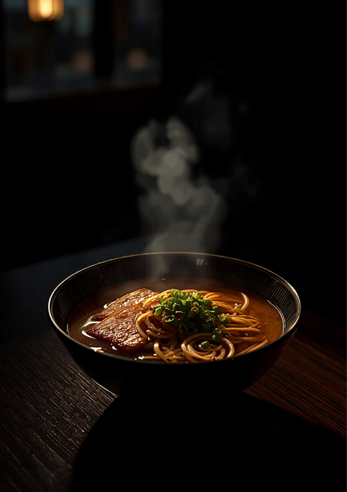
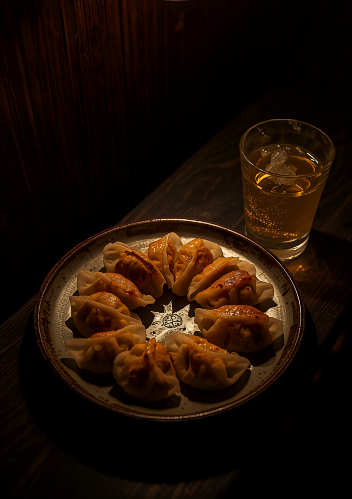

豚骨だらけの福岡で、珍しい非豚骨の中華そば。醤油と塩の二本柱に、ビールに合う餃子。夜18時から深夜3時まで、この番地の灯りはついています。
今夜の一杯を電話で聞く
「二八」は、そば粉の割合ではありません。ここ、高取二丁目2-8の番地がそのまま屋号です。街の住所を名乗る店として、街の夜に付き合います。
福岡では貴重な、非豚骨の中華そばです。
コクのある琥珀色のスープに、するする入る麺。飲んだ後の一杯にも、最初の一杯にも。中華そば・ワンタン麺でどうぞ。
魚介を効かせた、澄んだ塩。もう一本の柱です。こちらもワンタン麺にできます。気分で選んでください。

「餃子がめっちゃ美味かった。ビールにも合ってサイコー♪」
Googleの口コミより
まわりの店が閉まってからが、二八の本番です。
終電を逃した夜も、飲み足りない夜も。〆の中華そばに、間に合う。
「豚骨ラーメン店が異常に多い中、たまに食べたくなる中華そば。深夜まで営業していることも嬉しい。」
Googleの口コミより
「福岡では珍しい中華そば屋さん。西新界隈で非豚骨系は貴重なのでがんばってください！」
Googleの口コミより
「女性スタッフの接客最高✨」
Googleの口コミより